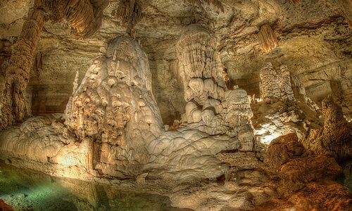

Natural Bridge Wildlife Ranch has taken to heart the care of animals from all over the world for over 30 years. With over 450-acres of pristine, natural, protected, environment, animal populations continue to thrive. Showcasing and sharing amazing creatures from all over the world. One part education, one part preservation; mixing it up for a day full of fun and adventure.